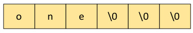
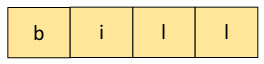

The C library function strncpy() is often recommended as a more secure alternative to strcpy().
strncpy() is similar to strcpy() except that it adds a parameter to indicate the maximum number of bytes
that can be copied from src to dest. The prototype is
char *strncpy((char * dst, const char * src, size_t len)
The variable len allows the programmer to prevent an unbounded copy. If src
is less than len characters long, then strncpy() adds null characters to
dest to ensure that len bytes are written. If we consider the code below,
static char name[6];
int main(int argc, char **argv) {
strncpy(name,"one",5);
}
The call to strncpy will copy the string "one" and also store three null characters at the end of
name. The result of memory after the call to strncpy() is

Specifying that a length of 4 ensures that the string copy is not unbounded.
While strncpy() may
may prevent unbounded copy, it is vulnerable to string termination errors. Consider the following code:
static char name[4];
int main(int argc, char **argv) {
strncpy(name,"bill",4);
}
In this example the string "bill" is 4 characters long plus one null character. The call to strnpcpy()
copies a maximum of 4 characters, leaving the variable name without a termination character as shown below.

This is a runtime error since the string will have a random length depending on the next occurrence of a null character in memory.